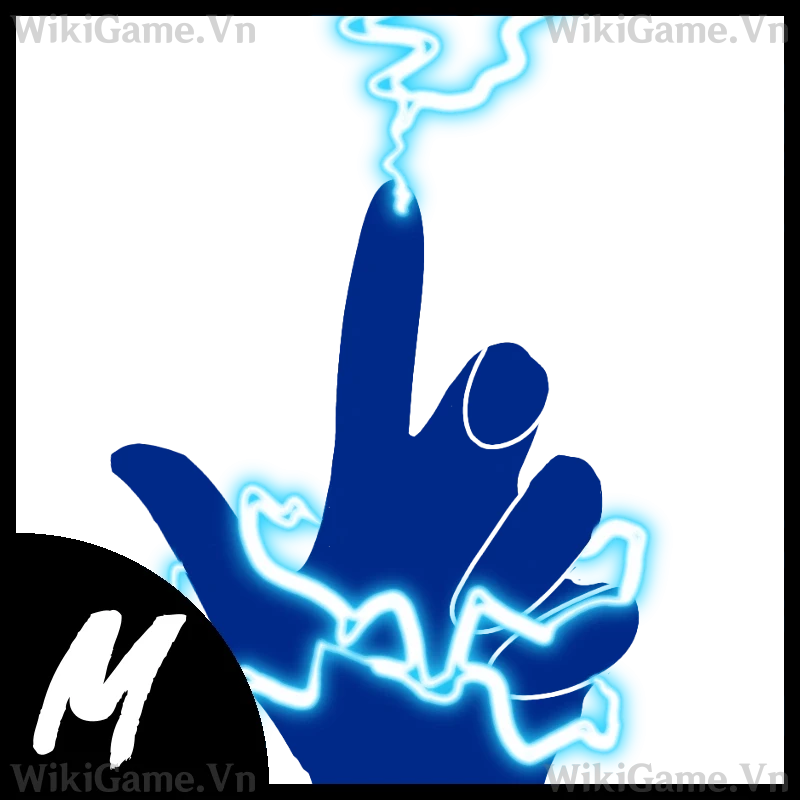

Võ điện là một lựa chọn tuyệt với với khả năng làm choáng đối thủ trúng đòn.
Chiêu thức võ điện:
Z-Key - Steam-Charged Fist
Yêu cầu Mastery: 70
Người dùng tung một xung lực mạnh gây giật lùi với tầm đánh vừa phải. Chiêu này có thể phá vỡ "Instinct" khi trúng đích trực tiếp.
X-Key - Deadly Shower
Yêu cầu Mastery: 130
Người dùng bắn nhiều đạn nhanh từ tay, gây sát thương đáng kể. Chiêu này yêu cầu nhắm chính xác để đạt hiệu quả cao.
C-Key - Heavy Water Punch
Yêu cầu Mastery: 250
Người dùng tập trung năng lượng nước để tung một cú đấm mạnh mẽ theo hướng con trỏ, gây giật lùi lớn. Chiêu này cũng có thể được sử dụng để di chuyển.